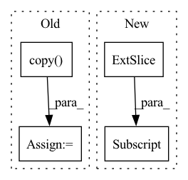

Pattern ID :11350
Before Change
labels = targets[:, 4].copy()
if targets.shape[1] > 5:
mixup = True
ratios = targets[:, -1].copy()
ratios_o = targets[:, -1].copy()
else:
mixup = False
ratios = NoneAfter Change
boxes = targets[:, :4].copy()
labels = targets[:, 4].copy()
if self.tracking:
tracking_id = targets[:, 5] .copy()
if len(boxes) == 0:
targets = np.zeros((self.max_labels, lshape), dtype=np.float32)In pattern: SUPERPATTERN
Frequency: 4
Non-data size: 4
Instances Fragment ID: 38802357
Project Name: zhangming8/yolox-pytorch
Commit Name: e162fc0465b1f5d8b3211cdc81fd8eabb6dd55c7
Time: 2021-07-26
Author: zhangming8@github.com
File Name: data/data_augment.py
M Class Name: TrainTransform
N Class Name: TrainTransform
M Method Name: __call__(4)
N Method Name: __call__(4)
M Parent Class:
N Parent Class:
M File Name: data/data_augment.py
N File Name: data/data_augment.py
M Start Line: 196
M End Line: 257
N Start Line: 196
N End Line: 265
Before Change
for i in range(len(imgs)):
npy_img = (imgs[i] * t_std + t_mean).numpy() // 反归一化
npy_img = npy_img[::-1, :, :]
imgs[i] = torch.from_numpy(npy_img.copy() ) // // 恢复通道顺序
return imgs
After Change
t_std = torch.FloatTensor(std).view(3, 1, 1).expand(3, 224, 224)
imgs = imgs * t_std + t_mean // 反归一化
imgs = imgs[:, [2, 1, 0], :, :] // RGB->BGR
return imgs
Fragment ID: 38802326
Project Name: bobo0810/classification
Commit Name: 991bb8852b9cb27dc8661e9d86dcd950a4d3dabf
Time: 2022-02-22
Author: lipengbo@kanzhun.com
File Name: DataSets/preprocess.py
M Class Name: PreProcess
N Class Name: PreProcess
M Method Name: convert_vis(2)
N Method Name: convert_vis(2)
M Parent Class:
N Parent Class:
M File Name: DataSets/preprocess.py
N File Name: DataSets/preprocess.py
M Start Line: 89
M End Line: 96
N Start Line: 89
N End Line: 94
Before Change
pytest.skip("test_sparse_solver failing.")
W_np = W[0].data.cpu().numpy()
b_np = W[0, :, 0].data.cpu().numpy()
x_np = b_np.copy()
W_sp = scipy.sparse.csc_matrix(W_np)
Wp = W_sp.indptr
Wi = W_sp.indices
Wx = W_sp.data
n = Wp.size - 1
c_Wp = numpy.ctypeslib.as_ctypes(Wp)
c_Wi = numpy.ctypeslib.as_ctypes(Wi)
c_Wx = numpy.ctypeslib.as_ctypes(Wx)
c_b = numpy.ctypeslib.as_ctypes(x_np)
torch_sparse_solve_cpp._sparse_solve(n, c_Wp, c_Wi, c_Wx, c_b)
assert (W_np @ x_np - b_np < 1e-5).all()
After Change
def test_sparse_solver(W, b):
target = torch.solve(b, W)[0][0, :, 0]
result = b[0, :, 0] .clone()
Wp, Wi, Wx = torch_sparse_solve_cpp._coo_to_csc(W[0].to_sparse())
torch_sparse_solve_cpp._sparse_solve(Wp, Wi, Wx, result)
assert (target - result < 1e-5).all() Fragment ID: 38802330
Project Name: flaport/torch_sparse_solve
Commit Name: dc1c016c609f2a62e96d4f7ca22bd652ba9f8227
Time: 2020-06-28
Author: floris.laporte@gmail.com
File Name: tests.py
M Class Name: AnonimousClass
N Class Name: AnonimousClass
M Method Name: test_sparse_solver(2)
N Method Name: test_sparse_solver(2)
M Parent Class:
N Parent Class:
M File Name: tests.py
N File Name: tests.py
M Start Line: 90
M End Line: 104
N Start Line: 90
N End Line: 94
Before Change
"values respectively."
)
// check y column: soft
history = df.loc[df.loc[:, "y"].notnull()].copy()
if history.shape[0] < 2:
raise ValueError("Dataframe has less than 2 non-NaN rows.")
df.loc[:, "y"] = pd.to_numeric(df.loc[:, "y"])
if np.isinf(df.loc[:, "y"].values).any():After Change
df.loc[:, name] = df[name].replace([np.inf, -np.inf], np.nan)
// if df[name].isnull().any():
// raise ValueError("Found NaN in column {name!r}".format(name=name))
if df.loc[df.loc[:, name] .notnull()].shape[0] < 1:
raise ValueError("Dataframe column {name!r} only has NaN rows.".format(name=name))
if df.index.name == "ds": Fragment ID: 38802365
Project Name: ourownstory/neural_prophet
Commit Name: 7ca21bf1403e63ae988aaa0e0a0eefdbacf572aa
Time: 2020-06-21
Author: oskar.triebe@merantix.com
File Name: neuralprophet/df_utils.py
M Class Name: AnonimousClass
N Class Name: AnonimousClass
M Method Name: check_dataframe(3)
N Method Name: check_dataframe(1)
M Parent Class:
N Parent Class:
M File Name: neuralprophet/df_utils.py
N File Name: neuralprophet/df_utils.py
M Start Line: 88
M End Line: 130
N Start Line: 76
N End Line: 119